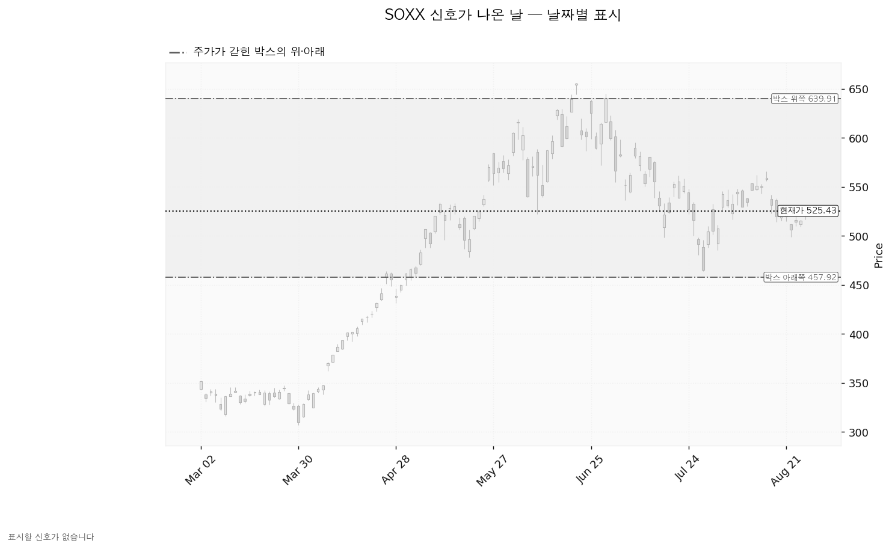
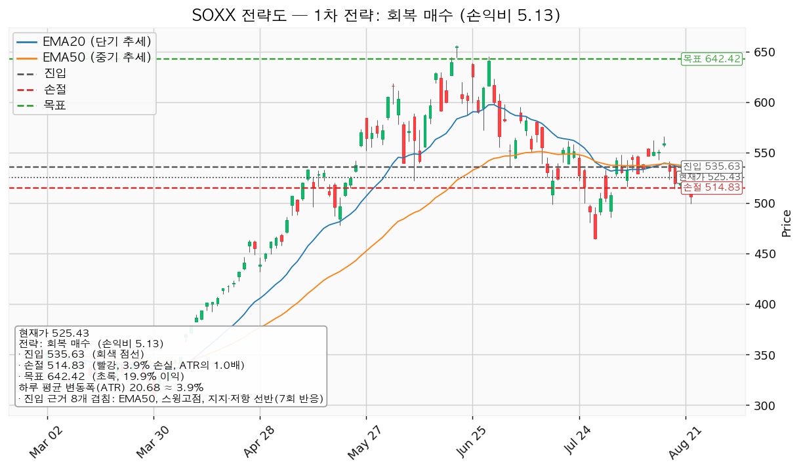
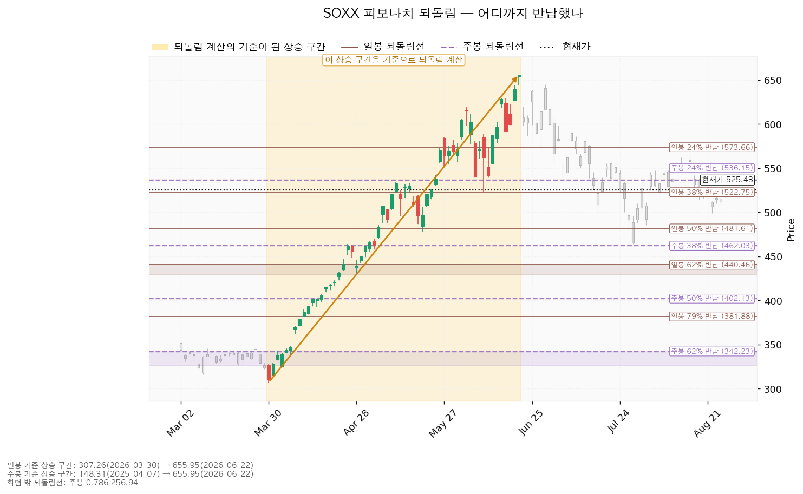
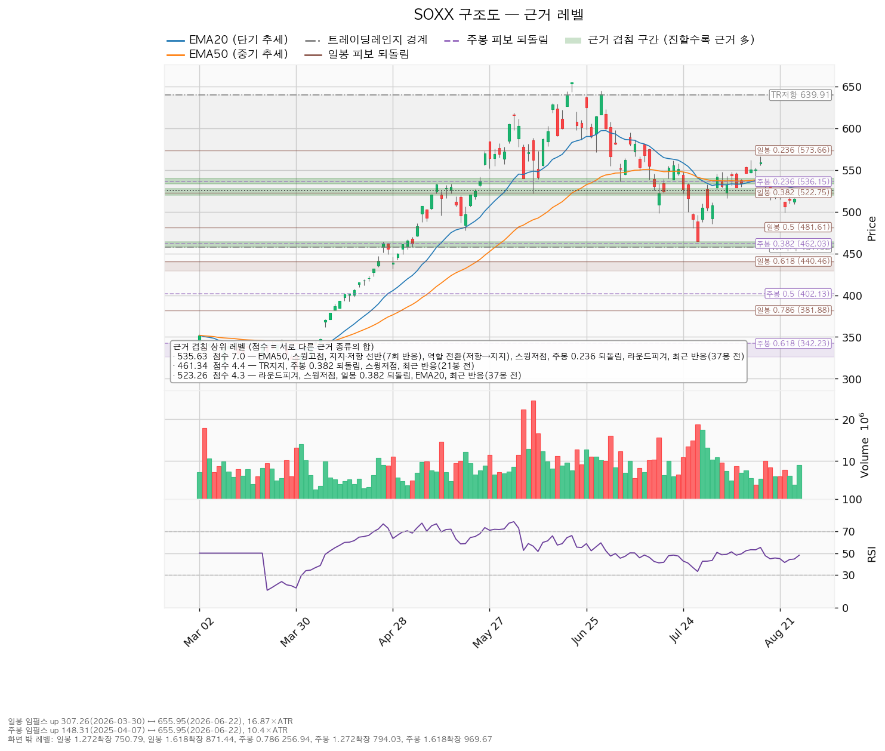

| 구분 | 가격 | 판정 방식 | 현재 상태 |
|---|---|---|---|
| 시나리오 폐기선 | 457.92 (박스 하단) | 이탈 후 3거래일 내 회복 실패 + 반등에서 저항으로 확인 | 유지 중 |
| 단기 회복선 | 535.63 (EMA50 + 스윙고점 + 7회 반응한 지지·저항 선반) | 일봉 종가로 회복한 뒤 되돌림에서 지지되는지 | 회복 대기 |
| 상승 확인선 | 639.91 (박스 상단) | 일봉 종가 돌파 후 되돌림 지지 확인 | 미돌파 |
iShares Semiconductor ETF(SOXX) — 미국 상장 반도체 섹터 ETF입니다.
| 항목 | 값 |
|---|---|
| 현재가(직전 확정 종가) | 525.43 |
| EMA20 (최근 20일 평균 추세선) | 528.07 — 현재가가 -0.50% 아래 |
| EMA50 (최근 50일 평균 추세선) | 533.57 — 현재가가 -1.55% 아래 |
| RSI(14) (과열·침체 강도, 50이 중립) | 48.05 — 중립 |
| ATR (하루 평균 변동폭) | 20.68 (현재가의 약 3.9%) |
| 직전 스윙고점 / 스윙저점 | 566.02 (2026-08-17) / 464.08 (2026-07-29) |
| 국면 판정 | 횡보 레인지 — 박스 하단 사수를 조건으로 구조 유지 |
한 가지 참고 사항이 있습니다. 마지막 봉은 종가가 확정되지 않아(장중 또는 데이터 지연) 계산에서 제외했으며, 위 수치는 모두 직전 확정 종가 기준입니다.
또한 ETF이므로 개별 종목용 컨센서스 항목이 대부분 비어 있습니다. 목표주가 평균과 애널리스트 추천등급은 조회되지 않았고, 예상 주당순이익도 없습니다. 조회된 것은 후행 PER(주가수익비율, 최근 12개월 실적 기준) 40.80 하나뿐입니다. 이는 ETF에 대한 커버리지가 존재하지 않기 때문이며, 추정으로 메우지 않겠습니다. 따라서 이번 판단은 전적으로 가격 구조에 근거합니다.
조회된 일봉은 총 752봉이며, 엔진은 40봉·90봉·180봉 세 구간을 모두 시험한 뒤 최근 90봉(약 4개월 반)을 채택했습니다.
| 시험 구간 | 가격이 박스 안에 머문 비율 | 한쪽으로 밀린 정도 | 박스 폭(ATR 배수) | 채택 여부 |
|---|---|---|---|---|
| 40봉 | 0.85 | 0.337 | 3.7 | 유효하나 미채택 |
| 90봉 | 0.911 | 0.122 | 8.8 | 채택 |
| 180봉 | 0.972 | 0.655 | 16.56 | 박스로 보기엔 한 방향 추세가 강함 |
90봉 구간에서 가격은 91.1% 시간을 박스 안에 머물렀고 한쪽으로 밀린 정도는 0.122로 거의 수평입니다. 이 창의 박스는 하단 457.92 ~ 상단 639.91이며 폭이 하루 평균 변동폭의 8.8배로, 박스 안에서만 왕복해도 상당한 폭이 나오는 큰 상자입니다.
박스 모양만 보고 매집이라고 쓰지 않습니다. 매집과 재분산은 같은 사각형을 그리며, 갈리는 것은 상자 안쪽입니다.
직전 구간: 이 박스 이전에는 297.60~366.00 박스에 갇혀 있었고, 그 상자를 위로 뚫고 올라와 지금 자리에 도달했습니다. 즉 아래에서 올라온 가격입니다. 상승 뒤에 만들어진 상자는 재축적(다시 매집 후 상승)일 수도, 분산(고점에서 물량을 넘기는 자리)일 수도 있습니다.
박스 내부 관측치 — 세 가지가 서로 엇갈립니다.
| 관측 항목 | 값 | 해석 방향 |
|---|---|---|
| 지지 테스트별 거래량 (평균 대비) | 04-21 1.0배 → 05-19 1.46배 → 07-29 1.80배 | 불리 — 하단을 시험할 때마다 매도가 늘고 있음 |
| 박스 내 저점 | 절상 (416.67 → 477.95 → 464.08) | 유리 — 저점이 이전보다 높아짐 |
| 상승봉 대 하락봉 거래량비 | 0.78 | 불리 — 오를 때 거래가 붙지 않음 |
엔진의 종합 판정은 중립이며, Wyckoff 국면 후보도 "판정 불가"입니다. 평탄한 레인지이면서 내부 지표도 한쪽으로 기울지 않았기 때문입니다.
이 중립 판정 때문에, 지지 선반 위 일봉 종가를 확인하고 들어가는 지지 확인 매수는 이번에 산출되지 않았습니다. 그 셋업은 박스 안쪽이 '매집 우위'로 판정될 때만 만들어집니다.
이번 90봉 구간에서 산출된 Wyckoff 이벤트는 하나도 없습니다. 속임수 하락(spring), 속임수 상승(upthrust), 강세 신호(SOS), 약세 신호(SOW) 어느 것도 기준을 충족하지 않았습니다. 아래 차트에 표시된 신호가 없는 것은 계산이 실패해서가 아니라 실제로 신호일이 없었기 때문입니다.

이 셋 중 첫 번째와 세 번째가 개선되면 재축적 쪽으로 무게가 실립니다.
엔진이 산출한 셋업은 하나입니다. 현재 국면이 중립·하락 쪽이라 되돌림 매수와 돌파 매수는 만들어지지 않았고, 앞서 설명한 대로 지지 확인 매수도 박스 내부가 중립으로 판정돼 조건을 채우지 못했습니다.
| 항목 | 회복 매수 — 대표 셋업 |
|---|---|
| 방향 | 매수 (롱) |
| 진입 | 535.63 — 일봉 종가 회복 확인 후 |
| 집행 손절 | 514.83 (진입 대비 -3.9%, 하루 평균 변동폭의 1.0배) |
| 최종 목표 | 642.42 (+19.9%) |
| 손익비 (최종 목표 기준) | 1 : 5.13 |
| 구조 증명도 | 회복 확인형 — 저항을 종가로 회복한 뒤에만 진입 |
| 진입 근거 | 8개 겹침 (점수 7.0, 이 종목 최상위): EMA50, 스윙고점, 지지·저항 선반(7회 반응), 역할 전환(저항→지지), 스윙저점, 주봉 0.236 되돌림, 라운드피겨 540, 최근 반응(37봉 전) |
| 목표 근거 | 2개 겹침 (점수 2.4): 박스 상단, 스윙고점 |
| 현재가와의 거리 | +1.94% (하루 평균 변동폭의 0.49배) |
대표 셋업 선정 이유: 손익비 5.13 × 회복 확인형이라는 구조 증명도 × 근거 겹침 7.0점으로 선정했습니다. 이번에는 셋업이 하나뿐이라 손익비 1등과 대표가 갈리는 상황은 발생하지 않았습니다. 다만 이 셋업의 성격은 분명히 해두겠습니다 — 저항을 종가로 넘긴 뒤에 사는 방식이므로 진입가는 불리하지만, 사기 전에 구조가 먼저 증명됩니다. 지금 525.43에 미리 사는 것보다 10 포인트 비싸게 사는 대신, 틀릴 확률을 줄이는 거래입니다.
손절 위치에 관한 중요한 사실: 엔진은 손절 514.83을 근거가 겹치는 구간(520.00~528.07, 라운드피겨 520 + 스윙저점 + 일봉 0.382 되돌림 + EMA20) 안쪽이 아니라 그 아래로 밀어냈습니다. 겹침 구간 안에 손절을 두면 지지가 작동하는 도중에 체결될 수 있기 때문입니다. 그만큼 손실폭이 커지고 손익비는 낮아졌으나, 이것이 실제 집행 가능한 숫자입니다. 손익비를 좋게 보이려고 520 부근 손절을 인용하지 않겠습니다.
| 단계 | 가격 | 청산 비중 | 해당 구간 손익비 |
|---|---|---|---|
| T1 | 563.01 | 50% | 1 : 1.32 |
| 본전 이동 | T1 도달 시 잔여분 손절을 535.63(진입가)로 상향 | — | — |
| T2 | 642.42 | 50% | 1 : 5.13 |

535.63을 종가로 회복한 것이 아직 확인되지 않았습니다. 525.43에서 미리 사는 것은 권하지 않습니다. 대신 아래 좌표를 두고 기다리십시오.
| 대기 좌표 | 가격 | 근거 |
|---|---|---|
| 되돌림 진입 후보 | 499.27 | 3개 겹침 (점수 2.3): 스윙저점 498.54, 라운드피겨 500, 최근 반응(3봉 전) |
| EMA20 위치 | 현재 528.07 → 5봉 후 527.03 | — |
| EMA50 위치 | 현재 533.57 → 5봉 후 532.10 | — |
이동평균 투영치는 "현재가 525.43이 5거래일 동안 그대로 유지될 경우 이평선이 어디에 놓이는가"를 계산한 것이며, 가격 예측이 아닙니다. 회복선 535.63이 시간이 지나면서 EMA50과 함께 아주 완만하게 낮아진다는 점만 참고하십시오.
일봉·주봉 되돌림 모두 정상적으로 계산됐습니다.
| 되돌림 | 일봉 기준 | 주봉 기준 |
|---|---|---|
| 24% 반납 | 573.66 | 536.15 |
| 38% 반납 | 522.75 | 462.03 |
| 50% 반납 | 481.61 | 402.13 |
| 62% 반납 | 440.46 | 342.23 |
| 79% 반납 | 381.88 | 256.94 |
현재가 525.43은 일봉 기준 38% 반납선(522.75) 바로 위에 있습니다. 3월 저점부터의 상승분 중 37.4%를 반납한 상태이며, 상승 추세가 살아 있다고 볼 때 흔히 멈추는 자리입니다. 그 아래 다음 지지는 481.61(일봉 50% 반납, 라운드피겨 480, 스윙저점 477.95가 겹침)이고, 그다음은 462.03(주봉 38% 반납)이 박스 하단 457.92와 거의 붙어 있습니다.
주봉 24% 반납선 536.15가 회복선 535.63과 사실상 같은 자리라는 점은 짚어둘 만합니다. 장기 상승 구간에서 보나 중기 구조에서 보나 회복 여부를 판정하는 가격이 같은 자리라는 뜻입니다.

점수는 서로 다른 근거 종류의 가중치 합입니다. 같은 종류가 여러 개 붙어도 한 번만 더해집니다. 점수가 높을수록 방어력이 높은 자리입니다.
| 가격대 | 점수 | 겹치는 근거 | 현재가 대비 |
|---|---|---|---|
| 535.63 (533.57~540.00) | 7.0 | EMA50, 스윙고점, 지지·저항 선반 7회 반응, 역할 전환(저항→지지), 스윙저점, 주봉 24% 반납, 라운드피겨, 최근 반응(37봉 전) | +1.94% |
| 523.26 (520.00~528.07) | 4.3 | 라운드피겨 520, 스윙저점, 일봉 38% 반납, EMA20, 최근 반응(37봉 전) | -0.41% |
| 499.27 (498.54~500.00) | 2.3 | 스윙저점, 라운드피겨 500, 최근 반응(3봉 전) | -4.98% |
| 479.85 (477.95~481.61) | 2.8 | 스윙저점, 라운드피겨 480, 일봉 50% 반납 | -8.67% |
| 461.34 (457.92~464.08) | 4.4 | 박스 하단, 주봉 38% 반납, 스윙저점, 최근 반응(21봉 전) | -12.20% |
| 563.01 (560.00~566.02) | 2.3 | 라운드피겨 560, 스윙고점, 최근 반응(8봉 전) | +7.15% |
| 576.83 (573.66~580.00) | 2.1 | 일봉 24% 반납, 라운드피겨 580, 최근 반응(8봉 전) | +9.78% |
| 642.43 (639.91~644.94) | 2.4 | 박스 상단, 스윙고점 | +22.27% |
535.63의 점수 7.0은 이 종목에서 압도적 1위입니다. 특히 이 자리는 가격이 실제로 7번 반응한 수평 가격대이며, 과거 저항이던 자리가 지지로 역할이 바뀐 곳입니다(2026-05-11 처음 형성, 가장 최근 반응은 6거래일 전). 계산으로 유도된 이평선·되돌림선과 달리 실제 거래가 남긴 흔적이라는 점에서 독립된 증거입니다. 회복선을 여기에 둔 이유입니다.
반대편 461.34(점수 4.4)는 박스 하단과 주봉 38% 반납선, 7월 29일 저점이 겹칩니다. 여기가 무너지면 아래로는 402.13(주봉 50% 반납)까지 겹치는 근거가 있는 가격대가 없습니다.

앞서 밝힌 대로 ETF에는 애널리스트 목표주가와 추천등급이 존재하지 않아 조회되지 않았습니다. 예상 주당순이익도 없습니다. 조회된 것은 후행 PER 40.80뿐이며, 이는 구성 종목의 가중 평균이라 개별 기업 밸류에이션처럼 해석하기 어렵습니다. 가격 목표에 대한 외부 검증은 이번에 불가능하며, 위 목표가 642.42는 전적으로 박스 상단이라는 가격 구조에서 나온 숫자입니다.
주도주(주도 섹터) 여부 — 현재로선 아닙니다. 근거는 다음과 같습니다.
다만 3월 저점 307.26에서 6월 고점까지 +113.5%의 상승이 있었고 그 상승분의 62.6%를 아직 지키고 있다는 점에서, 주도 지위를 잃었다기보다 쉬어가는 국면으로 보는 것이 타당합니다. 판정을 되돌리는 신호는 명확합니다 — 535.63 종가 회복과 상승 시 거래량 확대입니다.
섹터 강도 맥락이 필요하시면 시황 담당의 주도섹터 판정과 교차 확인하시는 것을 권합니다. 반도체 섹터가 시장 전체 대비 상대적으로 강한지 여부는 이 종목 분석만으로는 알 수 없습니다.
*본 자료는 정보 제공 목적이며 투자 권유가 아닙니다. 최종 투자 판단과 그 결과에 대한 책임은 투자자 본인에게 있습니다.*